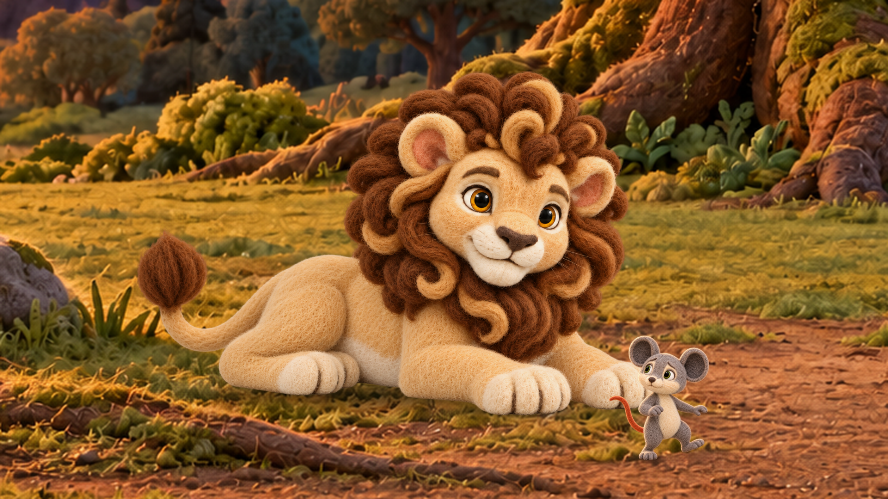
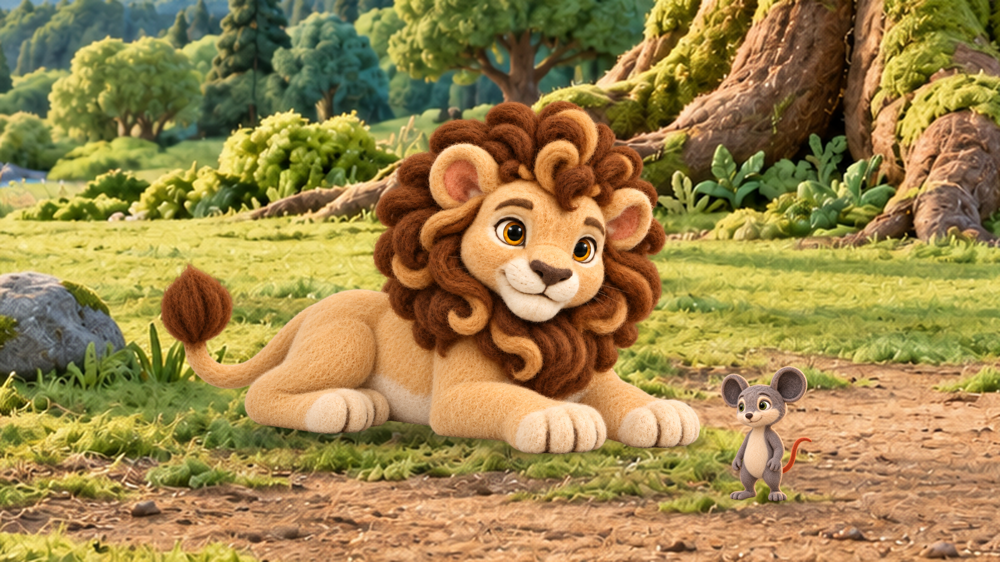

s04_p01 — Milo-world running: local dirt lane and readable gesture


480-pixel viewing preview
Review framing, expression, support and proportions. Candidate SHA-256: d890776f9165b293f8b91be2b2f2b45d231f387a5555914c65169c8219b1ac34
First camera/scale review for Scenes 04, 06, 07 and 16. The proposed images are separate 1920×1080 candidates. Existing selected story images remain active. Compare Milo’s face/action, shared eye lines, grounding and the amount of environment. Click an image for native resolution.
Owner review pending Character poses were generated with built-in ImageGen, inspected, then placed using the existing compositor on registered plate crops. All four preserve the normalized background outside actor/contact masks. Pose-to-neutral anatomical calibration and contact integration still need owner review before these become reusable anchors.
Prompts, sources and hashes · Pixel/size checks · Review notes and next steps
Review framing, expression, support and proportions. Candidate SHA-256: d890776f9165b293f8b91be2b2f2b45d231f387a5555914c65169c8219b1ac34


Review framing, expression, support and proportions. Candidate SHA-256: a3eb6d638ce58ef6acc27f5df73ff4f313a6baccadd03396a7f9c7e22b12cd12
Review framing, expression, support and proportions. Candidate SHA-256: 82eba9e3d3ec1a88f16c7a7027f87b95e85f780dc4578f12b9041e75affb0dd1


Review framing, expression, support and proportions. Candidate SHA-256: afe48c1ad4834fdf3428762903daa533ee33008b867764472be9d370d746b2cf